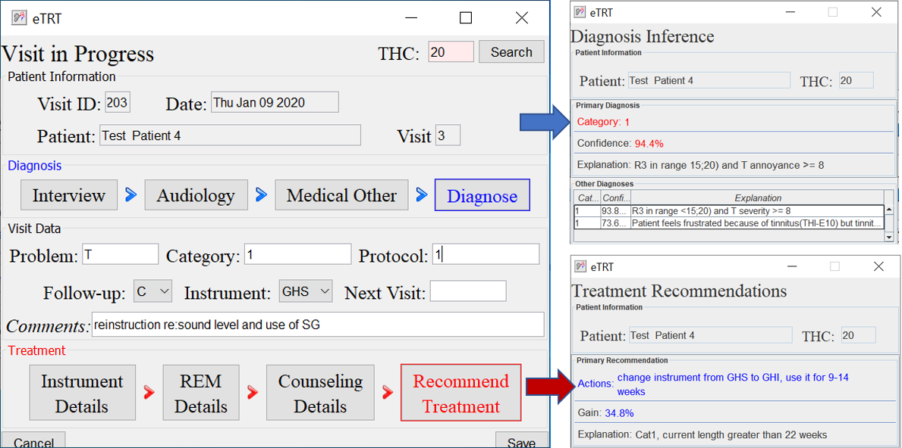

RECTIN project
RECTIN: Recommender system for tinnitus diagnosis and treatment
The knowledge-based system is built from clinical data on tinnitus patients successfully treated with tinnitus retraining therapy. A rule-based actionable knowledge base was extracted from clinical datasets and patient pattern-matching was implemented within the system's AI engine to support audiologists in the clinical delivery of this niche yet effective method. The system generates precise, personalized, and explainable recommendations for diagnostic and treatment decisions. Mining for Actionable Knowledge in Tinnitus Datasets describes knowledge discovery experiments and results. The book in Springer's Computational Intelligence series provides a complete guide to building a data-driven decision support system for audiology clinicians. Our recent results were presented at the AMIA 2020 Clinical Informatics poster session.
EMOTIN: Emotion-based music recommender system for tinnitus
EMOTIN is the subcomponent of RECTIN to recommend preferred music to tinnitus patients notched to their tinnitus frequencies. The system utilizes the concept of the Heidelberg model of music therapy for tinnitus. The RS implements a dimensional model of emotion, structured questionnaires for tinnitus patients that detect emotional state, audio processing, and machine learning to recommend songs to tinnitus patients. The goal is to target patients' negative emotions associated with tinnitus and transform them into a positive emotional state, and therefore manage their tinnitus daily to live a normal life. The chapter publication will appear in Springer's book "Recommender Systems for Medicine and Music", edited by Ras, Wieczorkowska, and Tsumoto.